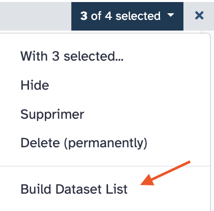

IMPORT DATA IN YOUR GALAXY ACCOUNT
1. Introduction¶
For the course "Analyse des Génomes", we need three types of datasets
- The reference sequences that will be used to align sequencing reads (full genome, miRNA, transposons, etc.)
- libraries of sequencing reads from small RNAs (for analysis of piRNAs)
- Librairies of sequencing reads from mRNA (for Gene differential expression analysis)
2. Galaxy data library¶
All of this data has been pre-loaded into the Bibliothèque de données (Data Library) on your Galaxy server.
You can access it from the menu by navigating to Data → Bibliothèque de données.
In this data library, you'll see three subfolders.
Fasta and GTF references
- dmel-r6.59-clean.fa → The "clean" dmel reference genome, version 6.59 (BDGP). "Clean" means that only the main main chromosomes are kept (excluding haplotypes and unassembled contigs) and were renamed with short names: 2L, 2R, 3L, 3R, 4, X and Y.
- dmel-r6.59-gtf → The corresponding genome annotation in GTF format.
- dmel-r6.59-miRNA → the pre-miRNA sequences in fasta format.
- dmel-r6.59-miscRNA → Sequences of snoRNAs, snRNA and, importantly, of rRNAs, in fasta format.
- dmel-r6.59-tRNA → The pre-tRNA sequences (before processing and editing) in fasta format.
- PLacZ → The sequence of the PLacZ transgene
RNAseq datasets
- GLKD-ALBA1 → sequence reads of RNAseq library from a GLKD mutant sample (replicat-1); FASTQ format.
- GLKD-ALBA2 → sequence reads of RNAseq library from a GLKD mutant sample (replicat-2); FASTQ format.
- GLKD-ALBA3 → sequence reads of RNAseq library from a GLKD mutant sample (replicat-3); FASTQ format.
- WT-ALBA4 → sequence reads of RNAseq library from a WT sample (replicat-1); FASTQ format.
- WT-ALBA5 → sequence reads of RNAseq library from a WT sample (replicat-2); FASTQ format.
- WT-ALBA6 → sequence reads of RNAseq library from a WT sample (replicat-3); FASTQ format.
- Test-Mapping → a sample of sequence reads that you will use for tests; FASTQ format.
Small RNAseq datasets
- GLKD-ALBA28 → sequence reads of small RNAseq library from a GLKD mutant sample (replicat-1); FASTQ format.
- GLKD-ALBA29 → sequence reads of small RNAseq library from a GLKD mutant sample (replicat-2); FASTQ format.
- GLKD-ALBA30 → sequence reads of small RNAseq library from a GLKD mutant sample (replicat-3); FASTQ format.
- WT-ALBA25 → sequence reads of small RNAseq library from a WT sample (replicat-1); FASTQ format.
- WT-ALBA26 → sequence reads of small RNAseq library from a WT sample (replicat-2); FASTQ format.
- WT-ALBA27 → sequence reads of small RNAseq library from a WT sample (replicat-3); FASTQ format.
3. Dataset Library usage¶
When you need one or more datasets for an analysis, import* them from the Data Library into a new or pre-existing Galaxy history.
Below we give you four examples of imports from the Data Library.
A. Import references datasets into your pre-existing Unnamed history¶
- 1. Go to
Data→Bibliothèque de données. - 2. Click
Fasta and GTF references. - 3. Check all boxes before the datasets.
- 4. In the top menu

Add to History, selectas Datasets. - 5. In the popup panel, leave the
Select historytoUnnamed historyand clickImport. - → Now, you'll see the three selected dataset showing up in the
Unnamed history.
Before the next step, rename the history Unamed history to References by clicking the
small  icon to the right of the history name.
icon to the right of the history name.
B. Import RNAseq datasets into a new history named RNAseq libraries¶
- 1. Go to
Data→Bibliothèque de données. - 2. Click
RNAseq datasets. - 3. Check the boxes before
GLKD-ALBA1,GLKD-ALBA2andGLKD-ALBA3 - 4. In the top menu
Add to History, selectas Datasets. - 5. In the popup panel, type
RNAseq Analysisin theor create new:field and clickImport. - → Now, you'll see the three selected dataset showing up in a new history named
RNAseq libraries.
C. Import RNAseq datasets as a collection into the RNAseq Analysis history¶
- 1. Go to
Data→Bibliothèque de données. - 2. Click
RNAseq datasets. - 3. Check the boxes before
WT-ALBA4,WT-ALBA5andWT-ALBA6. - 4. In the top menu
Add to History, selectas Collection. - 5. In the popup panel, leave
Collection typeasList, ensure thatSelect historyisRNAseq Analysisand clickContinue. - 6. In the new panel
Create a collection from a list of datasets, you can reorder the 3-element collection. Give it the nameWT RNAseq datasets, and click theCreate collectionbutton. - → Now, you'll see a collection of the three selected dataset showing up in the
RNAseq librarieshistory. You can click on this collection and see the three contained datasets. Click on the<< Historylink, to come back to the normal history view.
C. Import small RNAseq datasets into the new small RNAseq Analysis history¶
- 1. Go to
Data→Bibliothèque de données. - 2. Click
Small RNAseq datasets. - 3. Check all boxes before the datasets.
- 4. In the top menu
Add to History, selectas Datasets. - 5. In the popup panel, type
small RNAseq Analysisin theor create new:field and clickImport. - → Now, you'll see the six selected dataset showing up in a new history named
small RNAseq Analysis.
4. About datasets collections¶
A Galaxy Collection is a container object which is convenient to treat together multiple equivalent datasets, such as a list of sequencing datasets, of text labels, of fasta sequences, etc.
Collections are particularly useful for RNAseq datasets, since these datasets often come
as replicates which can be grouped upon a label. Your training is indeed a good example of
that, since you are provided with 3 WT datasets (ALBA4, 5 and 6) and 3 GLKD datasets
(ALBA1, 2 and 3).
You have just created a 3-element collection WT RNAseq datasets, but the three other datasets GLKD... in
the history RNAseq Analysis still stand as single datasets.
Here is a procedure to make a collection from these datasets.
- Go to your
RNAseq Analysishistory. There are multiple ways to this; Here, just click on the double arrow icon and select the
and select the
RNAseq Analysishistory. -
In the history
RNAseq Analysis, click the upper left small check box at the top of the dataset stack .
. -
Check the 3 datasets
GLKD(-ALBA1, 2 and 3) -
From the menu
3 of 4 selected(in dark blue,top area of the history), selectBuild Dataset List
-
In the pop-up panel, type
Mutant RNAseq datasetsin the fieldName: Enter a name for your new collection - Reorganize the datasets order by clicking the
alphabetic sortingicon. - Press the button
Create Collection